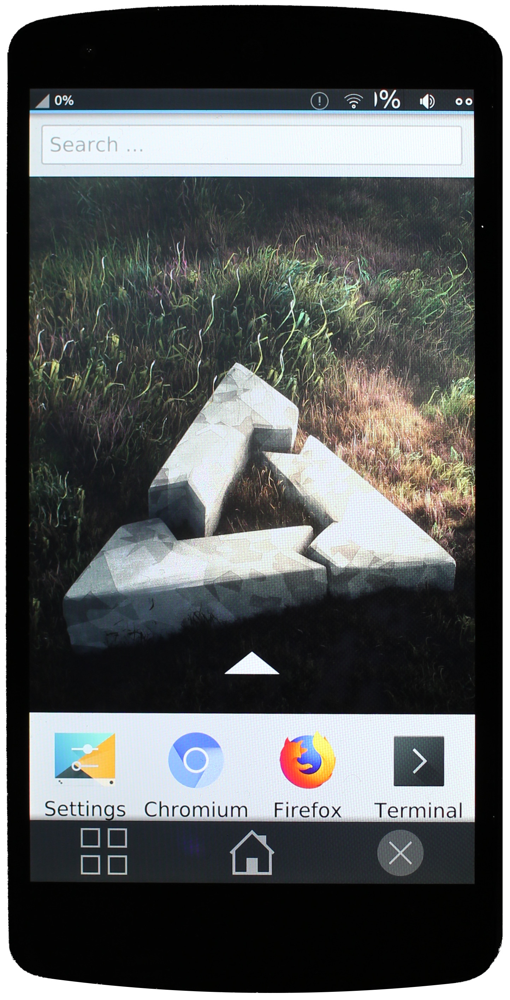

Google Nexus 5 (lg-hammerhead)
Take a look at the open hammerhead issues before starting an installation!
|
 Nexus 5 running plasma mobile | |
| Manufacturer | LG |
|---|---|
| Name | Nexus 5 |
| Codename | lg-hammerhead |
| Released | 2013 |
| Category | testing |
| Original software | Android |
| Original version | 4.4.4 on Linux 3.4.0 |
| Hardware | |
| Chipset | Qualcomm Snapdragon 800 (MSM8974) |
| CPU | 4x 2.3 GHz Krait 400 |
| GPU | Adreno 330 |
| Display | 1080x1920 IPS |
| Storage | 16/32 GB |
| Memory | 2 GB |
| Architecture | armv7 |
| Type | handset |
| Unixbench Whet/Dhry score | 840.9 |
{kind=link}
| USB Networking |
Works
|
|---|---|
| Flashing |
Works
|
| Touchscreen |
Works
|
| Display |
Works
|
| WiFi |
Works
|
| FDE |
Works
|
| Mainline |
Works
|
| Battery |
Partial
|
| 3D Acceleration |
Partial
|
| Audio |
Broken
|
| Bluetooth |
Works
|
| Camera | |
| GPS | |
| Mobile data |
Works
|
| SMS |
Works
|
| Calls |
Partial
|
| USB OTG |
Works
|
| NFC | |
| Accelerometer |
Partial
|
|---|---|
| Magnetometer | |
| Ambient Light | |
| Proximity | |
| Hall Effect | |
| Barometer | |
| Power Sensor | |
| Camera Flash | |
|---|---|
| Keyboard | |
| Touchpad | |
| USB-A | |
| HDMI/DP | |
| Ir TX | |
| Ir RX | |
| Stylus | |
| Haptics | |
| Ethernet | |
| FOSS bootloader | |
|
This device is based on the Snapdragon 800. See the SoC page for common tips, guides and troubleshooting steps |
Contributors
- MartijnBraam
- dzervas
- lawl
- bshah
- opendata
- JuniorJPDJ
- otto
Users owning this device
- Alexeymin (Notes: Test subject #1.2. For pmOS development)
- Ashirviskas (Notes: without a functioning display)
- Ash
- Baonks81 (Notes: 2GB/32GB LG-D821)
- Bczeman
- Blacklight
- CalcProgrammer1
- Clamor (Notes: Running Unlegacy Android Project Oreo ROM)
- Delta503 (Notes: broken glass but ready for testing)
- Delta503 (Notes: broken power button but ready for testing)
- Earboxer (Notes: glitchy touchscreen sensor)
- Ecloud
- FuchsPunk (Notes: Running pmOS)
- Funt (Notes: Using with custom built kernel)
- Gouchi
- Haeckle
- JD9999
- JIaxyga (Notes: Motherboard dead)
- Jja2000 (Notes: Running UBPorts, planning to use mainline)
- JuniorJPDJ
- Kcroot (Notes: I have 1 piece, started build)
- Lifehackerhansol (Notes: LineageOS 18.1, repartitioned)
- Linmob (Notes: power button syndrome)
- Magnouvean
- MartijnBraam
- Medusa (Notes: Numerous hw issues;unused)
- MuseCat
- Neilvandyke (Notes: has both LG-D820 and LG-D821)
- Nimayer
- Nobodywasishere
- NoriTech (Notes: cracked screen)
- Ollieparanoid
- Otto (Notes: two LG-D821 and broken LG-D820)
- Pparent
- Progressnoize (Notes: Running SailfishOS)
- Roboe (Notes: variant: hammerhead D821(E) 32GB, version-hardware: rev_11; aftermarket screen replacement; working SlimPort HDMI adapter available; running pmOS edge)
- Russanandres (Notes: Not starting up)
- Senorsmile
- Shiishii (Notes: Got two of those for dev purpose)
- Sonichero (Notes: Cracked screen, camera does not work and the battery is not what it used to be)
- Sorixelle
- SuzuDev (Notes: Broken battery connector)
- ThatGeekZen (Notes: D820)
- TQMatvey (Notes: Always ready to test)
- UnDevDeCatOS
- Unrznbl (Notes: 2022-09-21 testing)
- UxAmadeus
- Wangxiaohu (Notes: headless docker host - print server(CUPS)/file sharing(Samba)/Bittorent(transmission))
- WonderfulShrineMaidenOfParadise (Notes: lk2nd)
- Z3ntu
Installation
Fastboot mode
First make sure to enable USB debugging in Android ([1]) Then with device powered off, hold down Volume Down and Power buttons simultaneously for a few seconds, until Fastboot Mode screen appears.
OEM unlock
Get device into Fastboot Mode, plug in USB cable, then:
$ sudo fastboot oem unlock
When prompted on device, use Volume-Up/Down buttons to highlight choice, then Power button to select it. The Fastboot Mode screen will appear again, and a message regarding flashing will appear briefly.
Flashing
For installation you need to flash lk2nd and flash the rootfs. Do not flash the boot partition since lk2nd uses fs-boot functionality to boot the kernel from the /boot partition of the rootfs.
$ pmbootstrap flasher flash_lk2nd
$ pmbootstrap flasher flash_rootfs --partition userdata
If flashing fails with an error like "Unknown chunk type", you may need to update your bootloader. bootloader-hammerhead-hhZ20h.img comes with the latest firmware from android image page and can be flashed with fastboot flash bootloader path/to/bootloader-hammerhead-hhZ20h.img.
Hardware notes
DDR
There are 2 variants of hammerhead with different DDR vendors.
1. D820/D821(E) - Elpida
2. D820/D821(H) - Hynix
Stock bootloader/fastboot mode
$ fastboot getvar variant
variant: hammerhead D821(E) 16GB
...
lk2nd
$ fastboot oem lk_log && fastboot get_staged /dev/stdout | grep ddr
...
[40] Command line from primary bootloader: lk2nd uart_console=enable gpt=enable lge.kcal=0|0|0|x lge.rev=rev_11 androidboot.laf androidboot.emmc=true androidboot.serialno=0000000000000000 androidboot.bootloader=HHZ20h androidboot.baseband=msm androidboot.hardware.sku=D821 androidboot.hardware.ddr=elpida androidboot.hardware.display=orise androidboot.revision=11
...
Charge type
In case your phone is always plugged into power outlet 24/7, you can set it to be slow charge mode and reduce the charge voltage and current to minimum (set it at your own risk):
$ cat /etc/local.d/bq24190_charger.start
# echo Trickle > /sys/class/power_supply/bq24190-charger/charge_type
# echo 3504000 > /sys/class/power_supply/bq24190-charger/constant_charge_voltage
# echo 102400 > /sys/class/power_supply/bq24190-charger/constant_charge_current
See this reddit thread for some useful information.
See kernel documentation for details.
Power management
At this stage the directory /sys/devices/system/cpu/cpufreq is empty, so it seems there is no integrated power management.
You can disable cpu cores, though:
#!/bin/bash
echo 0 | sudo tee /sys/devices/system/cpu/cpu{2..3}/online
{kind=link}
Audio
No one has still worked on playback and recording support on-device.
Neverthless you can use a bluetooth headphone/speaker or another device (like an android device) to stream your audio.
source device
# /etc/profile
export PULSE_SERVER=<sink_device_ip_address>
sink Device
# etc/pulse/default.pa
load-module module-native-protocol-tcp auth-ip-acl=127.0.0.1
Don't forget to copy cookie (~/.config/pulse/cookie) to from sink to source!
Bluetooth
Bluetooth controller works. You can start the service with rc-service bluetooth start and enable it with rc-update add bluetooth
To test, use the instructions on the Alpine wiki.
Cellular modem
Using instructions for Nokia N900 it seems that SMS and calls likely work.
WiFi
On first boot, if the wifi adapter started in airplane mode and NetworkManager did not detect that, a manual workaround is to disable and re-enable the wifi adapter.
This can easily be done in the graphic shell (Plasma Mobile has an airplane mode switch in the pull-down menu: check it and uncheck it) or through the shell:
$ nmcli radio all off
$ nmcli radio all on
Software notes
_video_thumbnail.png)
Mate
Mate works if started with the fbdev driver, otherwise it freezes.
Booting
Producing MATE images with pmbootstrap will result in a non-functional device (as of now),
so install the OS using the gnome environment.
Then from a root console, install
postmarketos-ui-mate,
lightdm,
lightdm-gtk-greeter,
onboard,
brightnessctl.
Proceed to configure LightDM (/etc/lightdm/lightdm-gtk-greeter.conf)
- enable touch keyboard (
keyboard=onboard) - enlarge lightdm fonts (
xft-dpi=460)
and finally
- test the service (
rc-service lightdm restart) - enable it at boot (
rc-update add lightdm) - disable gdm (
rc-update del gdm)
Scaling
MATE does not follow GNOME scaling settings nor does it have a scaling control panel,
so you will need to add export variables directly. Add the following lines to /etc/profile:
# /etc/profile
export GDK_SCALE=2
export QT_QPA_PLATFORM=qtc
export QT_SCALE_FACTOR=2
Be aware that if you already setup scaling from the GNOME control center, this will probably make really really big.
Touch keyboard
To be able to further configure MATE, you will need to ability to cast right clicks:
the Onboard touch keyboard is easily configurable and it's able to send any mouse signal you can think of (even drag and double click).
If you don't want to configure the device using touch input, you can always install barrier to use mouse and keyboard wirelessly from another device.
Bluetooth
Installing blueman gnome-bluetooth should suffice.
Power button
You can emulate the power button by creating a button on the panel pointing to the following script.
Phosh
{kind=link}
Graphics
The interface randomly freeze (pmaports#424) in particular when heavy loading (browsing and stuff), requiring an hard reboot.
Bluetooth
There used to be problems with Bluetooth on Phosh (pmaports#904 - apparently fixed).
Numeric passwords
Be sure to use a numeric password if you want to use phosh, because its lockscreen only accepts digits.
Power button
Power button turns off the screen but the touchscreen keeps working.
Plasma Mobile
Plasma Angelfish does not run. You may want to install another browser, like qtwebbrowser, Firefox and/or Chromium.
Browsing
- Qutebrowser crashes;
- Firefox works very well on Xorg, somewhat slower on wayland;
- Dillo will probably work, too.
WebkitGTK based
- Epiphany;
- Vimb;
- Netsurf;
They work well, but they are slow on both Xorg and Wayland.
Troubleshooting
Fastboot unknown chunk type
Flashing with fastboot seems to fail for some outdated firmware, it prints the message "FAILED (remote: Unknown chunk type)" when trying to flash the rootfs to userdata. This can be solved by updating to the latest baseband firmware and bootloader.
Remote Data Too Large
Sometimes ./pmbootstrap.py flasher flash_kernel can fail with an error message that includes "Failed (remote: data too large)".
This might be solved by updating by reflashing the latest version of the stock Android
image for the device.
Useful aliases
Force reboot
# echo b > /proc/sysrq-trigger
Input devices
# cat /proc/bus/input/devices
Partition layout
The eMMC could be either mmcblk0 or mmcblk1, and it seems to be random for each boot.
hammerhead:~# fdisk -l -o Device,Start,End,Sectors,Size,Name /dev/mmcblk1
Disk /dev/mmcblk1: 14.7 GiB, 15758000128 bytes, 30777344 sectors
Units: sectors of 1 * 512 = 512 bytes
Sector size (logical/physical): 512 bytes / 512 bytes
I/O size (minimum/optimal): 512 bytes / 512 bytes
Disklabel type: gpt
Disk identifier: 98101B32-BBE2-4BF2-A06E-2BB33D000C20
Device Start End Sectors Size Name
/dev/mmcblk1p1 1024 132095 131072 64M modem
/dev/mmcblk1p2 132096 134143 2048 1M sbl1
/dev/mmcblk1p3 134144 135167 1024 512K rpm
/dev/mmcblk1p4 135168 136191 1024 512K tz
/dev/mmcblk1p5 136192 137215 1024 512K sdi
/dev/mmcblk1p6 137216 138239 1024 512K aboot
/dev/mmcblk1p7 138240 142335 4096 2M pad
/dev/mmcblk1p8 142336 144383 2048 1M sbl1b
/dev/mmcblk1p9 144384 145407 1024 512K tzb
/dev/mmcblk1p10 145408 146431 1024 512K rpmb
/dev/mmcblk1p11 146432 147455 1024 512K abootb
/dev/mmcblk1p12 147456 153599 6144 3M modemst1
/dev/mmcblk1p13 153600 159743 6144 3M modemst2
/dev/mmcblk1p14 159744 160767 1024 512K metadata
/dev/mmcblk1p15 160768 193535 32768 16M misc
/dev/mmcblk1p16 193536 226303 32768 16M persist
/dev/mmcblk1p17 226304 232447 6144 3M imgdata
/dev/mmcblk1p18 232448 277503 45056 22M laf
/dev/mmcblk1p19 277504 322559 45056 22M boot
/dev/mmcblk1p20 322560 367615 45056 22M recovery
/dev/mmcblk1p21 367616 373759 6144 3M fsg
/dev/mmcblk1p22 373760 374783 1024 512K fsc
/dev/mmcblk1p23 374784 375807 1024 512K ssd
/dev/mmcblk1p24 375808 376831 1024 512K DDR
/dev/mmcblk1p25 376832 2473983 2097152 1G system
/dev/mmcblk1p26 2473984 2535423 61440 30M crypto
/dev/mmcblk1p27 2535424 3969023 1433600 700M cache
/dev/mmcblk1p28 3969024 30777299 26808276 12.8G userdata
/dev/mmcblk1p29 30777300 30777310 11 5.5K grow
Links
- shelli-ui: framebuffer console + gesture recognition video demo
- Demonstration video of a Nexus 5 with postmarketOS and plasma
- obsolete downstream kernel packaging
- Device package
- dmesg from mainline linux with the missing block devices
- flto's hammerhead-upstream status page
- Brian Masney's Nexus 5 upstream status page
Photos
Plasma Mobile
TTY on mainline
Plasma Mobile on 2018-07-07
Plasma Mobile on 2018-09-16
Openstreetmap on Nexus 5
Firefox on Nexus 5
Terminal on Nexus 5
Wikipedia on Nexus 5
Nexus 5 home in nature
Nexus 5 home on bed
Nexus 5 wikipedia on bed
Nexus 5 home on desktop
K3s cluster built with Nexus 5
{kind=link}
{kind=link}
{kind=link}
{kind=link}
{kind=link}
{kind=link}
{kind=link}
{kind=link}
{kind=link}
{kind=link}
{kind=link}
{kind=link}
{kind=link}
{kind=link}
{kind=link}
Videos
- Running Phosh on the Nexus 5 with postmarketOS - YouTube
- Stear Prime: input and sound sharing - YouTube
- Stear Prime GNU half - YouTube
{kind=link}